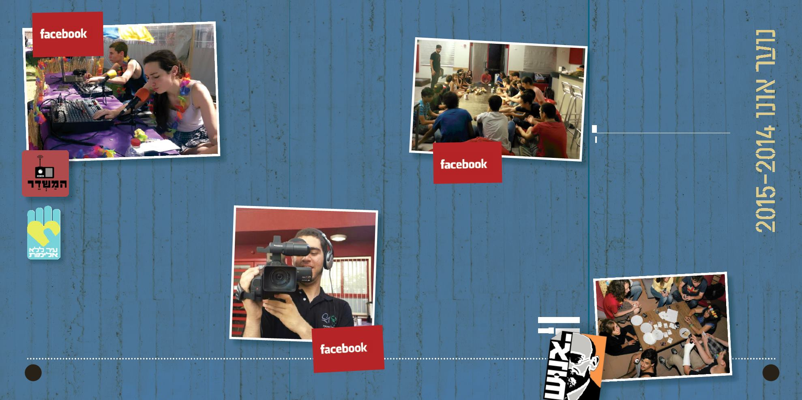

הפריסקופ
ערוץ הטלוויזיה האינטרנטי
אור כהן
רכז :
קבוצת נוער מקצועית המפיקה כתבות וידאו
ומשדרת אותם ברשתות החברתיות. הקבוצה
מפיקה כתבות עם תכנים שונים ברוח צעירה
ומקורית.
גילאי יעד: ז'–ט'
על מנת להצטרף לקבוצה המשתתפים יעברו
קורס הפקת כתבות טלוויזיה מקצועי אשר יתן
כלים כתיבה, הפקה, צילום, עריכה ועמידה מול
מצלמה. הכתבות מתפרסמות בערוצי המדיה
השונים, באינטרנט וברשתות החברתיות.
054-5428380 /
אור
לפרטים:
המשדר
תחנת הרדיו של נוער אונו
אור כהן
רכז :
עדי לרנר
מדריכה מקצועית:
בואו להיות שדרנים, עורכים ומפיקים בתחנת
"המשדר" - תחנת הרדיו של בני הנוער בקריית
אונו. צוות תחנת הרדיו משדר מידי שבוע
מגוון תוכניות מקוריות שיצרו חברי התחנה.
התוכניות משודרות בערוצי המדיה השונים:
ברשתות החברתיות ובשידורים חיים באירועי
הנוער השונים.
גילאי יעד: ח'–י״ב
ישיבות מערכת מתקיימות אחת לשבוע
בימי ראשון.
054-5428380 /
אור
לפרטים:
חפשואותנו
ב-
המשדר
יאנוּש
אור כהן
מנהל:
אור כהן, חנה ישעיהו
רכזים:
סימה מגרה
אם הבית:
רח׳ נהר הירדן 8, קריית אונו
טל: 7425206-30
מועדון הנוער יאנוּש משמש כבית לבני הנוער
בעיר והוא משלב פעילויות שונות בתחומי עניין
מגוונים כגון: אירועי פנאי, מפגשים חברתיים,
סדנאות וקורסים מקצועיים.
ביאנוּש פועלות קבוצות מנהיגות נוער שונות
החל ממועצת הנוער העירונית, צוות יאנוש,
קבוצת הפריסקופ, ותחנת הרדיו האינטרנטית
"המשדר".
המועדון פועל במהלך כל השבוע וניתן למצוא
בו משחקי שולחן, עמדות אינטרנט, קונסולות
משחק ועוד...
המרכז פועל בימים א'-ה' 00:61-00:02,
בערבי שישי ובחופשות עד לשעות הקטנות של
הלילה.
אתם מוזמנים להתעדכן בפעילות שלנו
בפייסבוק - "יאנוש".
צוות יאנוּש
אור כהן
רכז:
קבוצת נוער חברתית התנדבותית האחראית על
תפעולו המלא של מועדון הנוער ומשלבת בין
יזמות, ארגון, שיווק ופרסום, הדרכה והפקת
אירועים לנוער.
הצוות אחראי על תפעולו השוטף של המרכז
הכולל את הפעלת וניהול הקיוסק, מעורבות
מלאה בהפקת אירועים ופעילויות לנוער.
גילאי יעד: כיתות ח'–י״ב
ישיבת צוות מתקיימות אחת לשבוע בימי רביעי.
לפרטים נוספים :
054-5428380 /
אור כהן
חפשואותנו
ב-
יאנוש
5
4
מחלקת הנוער / טל: 5311003-450
חפשואותנו
ב-
הפריסקופ